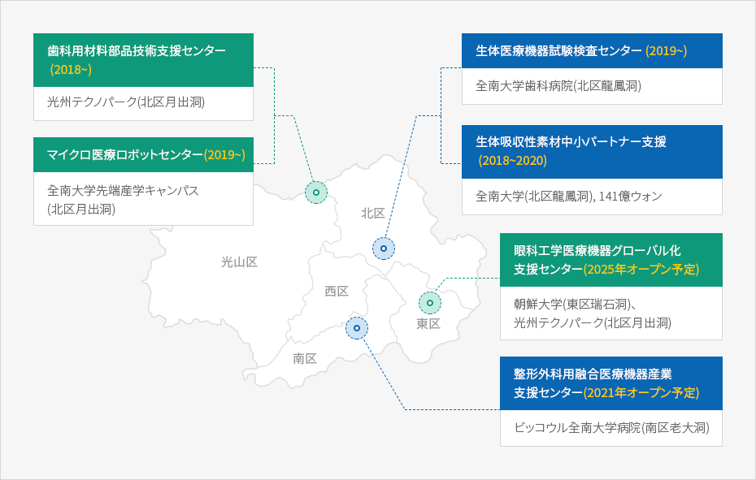

新成長動力産業
- Home
- 主要産業
- 新成長動力産業
光融合産業
MEMS(超小型精密機械技術)基盤高付加光半導体商用化インフラの構築
- 事業期間 : 2020年~2022年
- 総事業費 : 100億ウォン
- 事業主管 : 韓国生産技術研究院、西南地域本部
- 事業内容
- 超小型CWDM/センサー開発に必須なMEMS工程設備の構築
- MEMS 基盤のセンサー/CWDM/光スイッチング素子プラットフォーム技術の開発
- MEMS 工程を利用した高付加価値素子の開発、試生産支援および人材育成
光融合産業プラットフォームの共同活用事業化支援
- 事業期間 : 2019年~2021年
- 総事業費 : 160億ウォン
- 事業主管 : 韓国光技術院、韓国電子通信研究院、韓国生産技術研究院
- 事業内容
- 光融合産業対応に必要な製品の機能および性能を実現するための試作品製作支援
- 光融合製品の国際公認認証試験、測定〮分析等の支援
スマート根幹産業

金型製作バリューチェーン革新支援センターの鳥瞰図
IOTビッグデータ基盤の金型製作バリューチェーン革新支援
- 位 置 : 光山区平洞産業団地 金型特化団地内
- 事業規模 : 敷地面積3,302㎡、延べ面積2,640㎡
- 事業期間 : 2018年~2020年
- 総事業費 : 204億ウォン
- 事業内容
- IoT、ビッグデータ、ICTを金型の設計、製作、試験などの全工程に適用
- 実証センター1棟(地上2階)および2,500トンプレスなどの設備3種の構築
- 金型製作技術革新設備の運営および試験〮性能評価システムの開発など
医療産業
医療素材部品産業クラスターの造成


치과용소재부품기술지원센터 (2018~) - 광주테크파크 (북구 월출동)
마이크로의료로봇센터 (2019~) - 전남대 첨단 산학캠퍼스 (북구 월출동)
생체의료기기 시험검사센터 (2019~) - 전남대학교 치과병원 (북구 용봉동)
생체흡수성소재 중소파트너지원 (2018~2020) - 전남대학교 (북구 용봉동), 141억원
안과공학 의료기기 글로벌화지원센터 (2025년 개소예정) - 조선대학교 (동구 서석동), 광주테크노파크 (북구 월출동)
정형외과용 융합의료기기 산업지원센터 (2021년 개소예정) - 빛고을 전남대학교 (남구 노대동)

光州 ˙ 全南医療観光クラスターの構築
- 「光州市（医療 + 全南（観光）」協力連携の推進
- 光州医療観光支援センターの運営(金大中コンベンションセンター2階)
- 館内外国人患者利用可能医療機関 : 40ヶ所
- 光州市指定先導医療機関:朝鮮大学病院、全南大学病院、朝鮮大学歯科病院、CL病院、青縁漢方病院
- 中国語、英語、モンゴル語、ロシア語、日本語、ベトナム語、カンボジア語対応